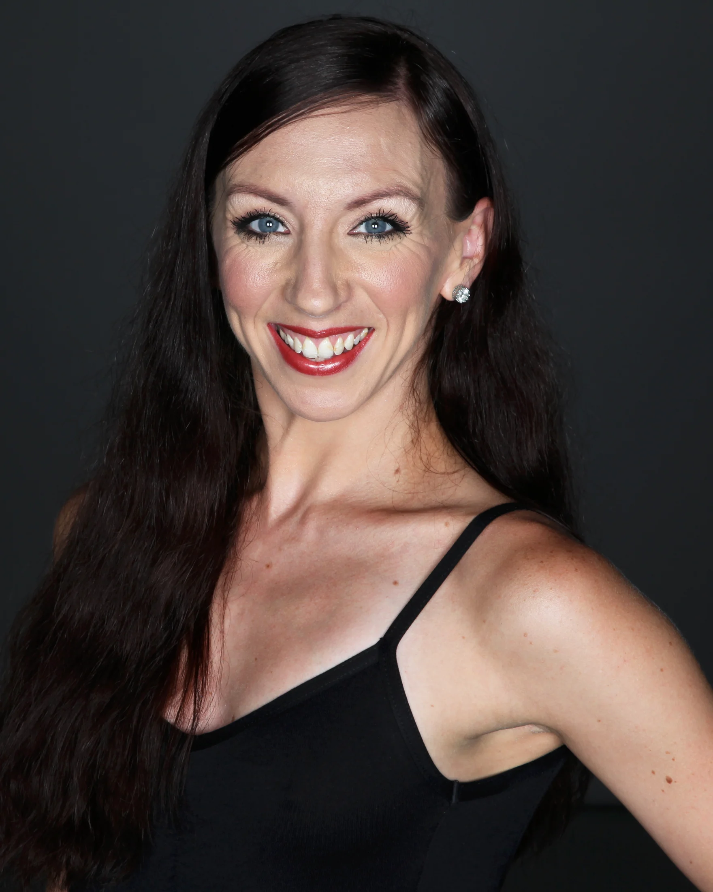

Biography
A life in movement.
Maeghan McHale was born in Baltimore, Maryland and has built a career across performance, choreography and dance education.
She studied at the Baltimore School for the Arts, where she performed works by Hinton Battle, David Parsons, David Grenke and John Clifford. A scholarship took her to Dance Theatre of Harlem, where she performed with the Dancing Through Barriers Ensemble. While living in New York City, she studied at Steps on Broadway and performed with Extended Dance Company as well as Off-Broadway under Tony Award winner Hinton Battle.
In 2005, Maeghan received a scholarship to the Giordano Dance School. She became a Performing Apprentice in 2006 and joined Giordano Dance Chicago in 2007, beginning a 13-season career that took her to stages across the United States and internationally.

Choreographer
From performer to maker.
Alongside her performance career, Maeghan developed an extensive body of choreographic work. Her work has appeared on the Joyce Theater stage through Dancin’ Downtown at the Joyce and the Dancers Responding to AIDS Benefit. “Angelica” and “If” each received Performance Awards and went on to Central Park SummerStage.
Her choreography has received recognition including Outstanding Choreographer and Outstanding Choreography honors at Youth America Grand Prix. Her ensemble work placed first in the Ensemble Category at YAGP Finals in 2021. In 2018, she received the YAGP National Choreographer Award, which included the opportunity to travel to Russia and set work at the Bolshoi.
Maeghan has created work for First State Ballet Theatre, including “Out of the Silence” in 2022 and “Revolving Doors” in 2024.
Artistic voice
What matters is that the work reaches people.
Maeghan’s process begins with story. She is interested in movement that can hold excitement, terror, confrontation, uplift and everything between.
“I try to share stories with the audience that they can relate to.”
“No pretty poses with awkward transitions. Utilizing the entire body, taking up space, level changes, dynamics, musicality and covering the entire stage.”
“I try to expand that box of movement so it allows the dancer to feel a little more free.”
“Each of my works has its own unique voice. Each story stands alone.”
Selected milestones
Performed for 13 seasons with Giordano Dance Chicago, touring nationally and internationally.
Named one of Dance Magazine’s “25 to Watch.”
“Angelica” and “If” received Performance Awards and were presented at Central Park SummerStage in New York City.
Featured on the cover of Dance Magazine with Giordano Dance Chicago.
Served on the school faculty of the USA International Ballet Competition in Jackson, Mississippi.
Received the YAGP National Choreographer Award, including the opportunity to travel to Russia and set work at the Bolshoi.
Appeared in UPROOTED: The Journey of Jazz Dance, the feature documentary tracing the history and evolution of jazz dance.
Ensemble work placed first in the Ensemble Category at YAGP Finals.
Created “Out of the Silence” and “Revolving Doors” for First State Ballet Theatre.
Faculty member at Pittsburgh Ballet Theatre School, teaching Jazz and Contemporary.
Travels to choreograph, teach master classes and serve on competition juries, including as a Judge/Teacher for Youth America Grand Prix.